When passing a vehicle that has just parked parallel to the road, you should assume the driver will open the door as you approach. Use extra caution when driving near parked vehicles.
A driver approaching a flashing red traffic signal must: Stop befor entering the intersection.
Signs that are colored orange are: Work zone signs.
If two drivers arrive at the same time to a four-way intersection controlled by stop signs: The driver on the right has the right-of-way.
When two vehicles enter an intersection from different highways at the same time, which vehicle must yield the right-of-way? The vehicle on the left.
Which of the following commonly causes traffic accidents? All of the above.
If you are driving on the interstate and pass your exit, you should: Continue driving and use the next exit..
An arrow painted on the pavement means: Drivers in the proper lane must make the movement indicated by the arrow while following directions indicated by traffic signals.
You are waiting in the intersection to complete a left turn. You should: Signal and keep your wheels straight.
A driver can legally pass on the right side of another vehicle: If the vehicle is waiting to turn left and there is an available passing lane.
When you are being tailgated: All of the above.
Roads freeze quickly when they are: Shaded.
If your vehicle begins to skid, you should: Turn your steering wheel in the direction you want to go.
The amount of space you need to cross traffic depends on the: Road conditions, weather conditions, and oncoming traffic.
Do not pass: On a hill or curve; When school bus lights are flashing; When approaching an intersection.
On slippery roads, you should: Slow down.
A “No standing” sign at a certain location means: You may stop temporarily only to pickup or discharge passengers.
A flashing yellow light at an intersection means that you should: Slow down and proceed with care.
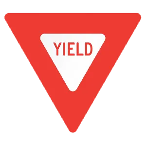 This sign means: Slow down and be prepared to stop if necessary.
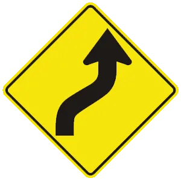 This sign means: The road ahead curves right, then left.
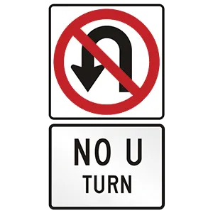 This sign means: U-turns are prohibited.
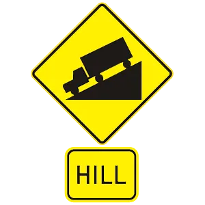 This sign means: Upcoming hill.
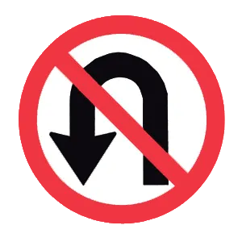 This sign means: No U-turn.
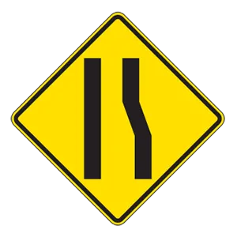 This sign means: Lane ends.
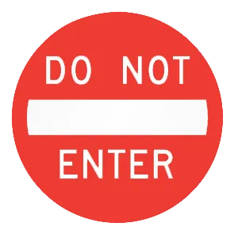 This sign is used to prevent: Entrances from the wrong direction on one-way streets and expressway ramps..
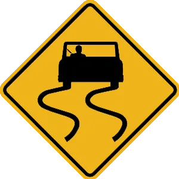 This sign means: The road will be slippery when wet.
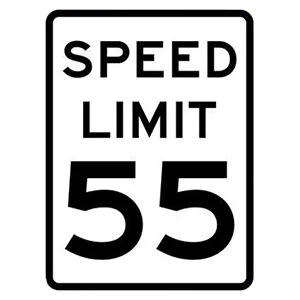 This road sign means: The maximum legal speed on the roadway is 55 mph.
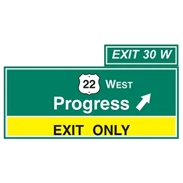 If you see this sign above your lane, you: Must exit the freeway, if you stay in your current lane.
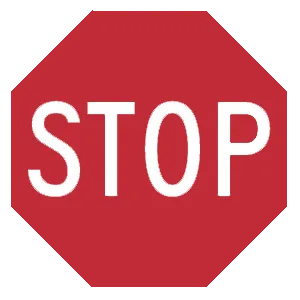 This road sign means: You must come to a complete stop.